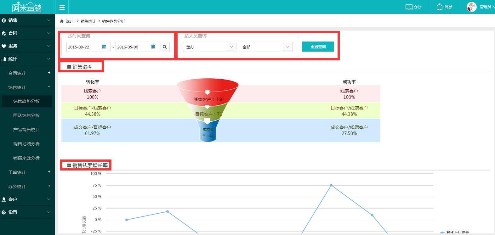
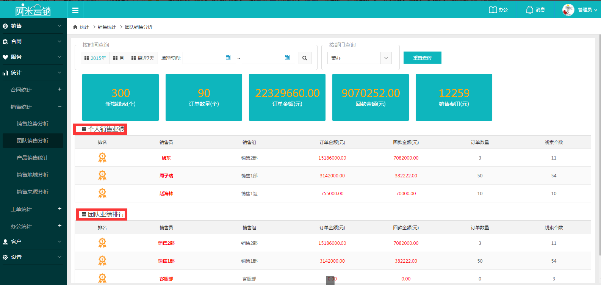
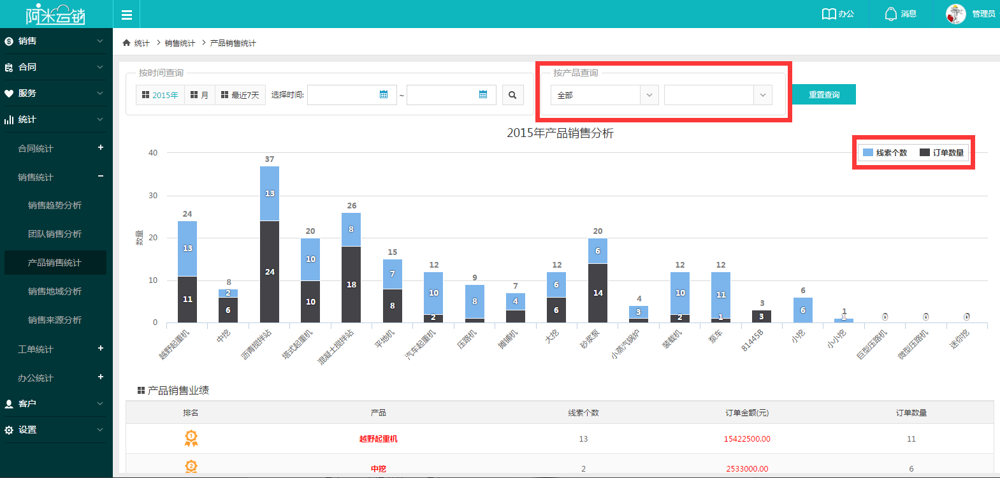
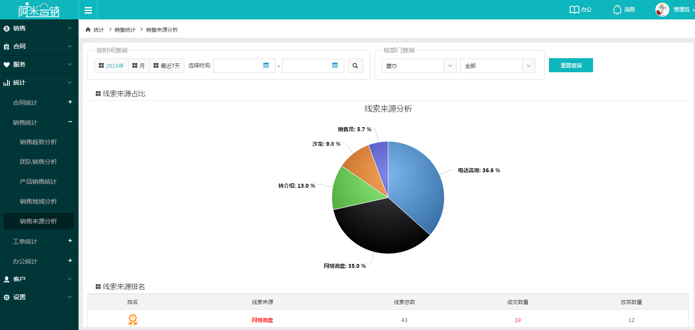

销售统计按照不同维度，分为销售趋势分析、团队销售分析、产品销售统计、销售地域分析和销售来源分析五大功能。
1销售趋势分析：展示权限范围内的销售漏斗转化率情况，销售线索增长率情况，可按照时间和部门人员进行筛选统计；
2团队销售分析：统计销售个人与团队的业绩排行情况，首要衡量回款金额，其次订单金额、订单数量以及线索个数。
3产品销售分析：横向统计企业哪个产品或哪个系列的产品卖的最好，可按照时间和产品分类进行选择排名，直观的看出企业什么产品最为畅销。数。
4销售地域分析：按照客户地域的角度，统计哪个地区的客户需求量最大，直观的看出哪个地区的客户最多。
5销售来源分析：按照自定义的销售线索来源，统计出哪个渠道来的销售线索最多，哪个渠道获取量最低，针对来源分析，找出企业不足。
